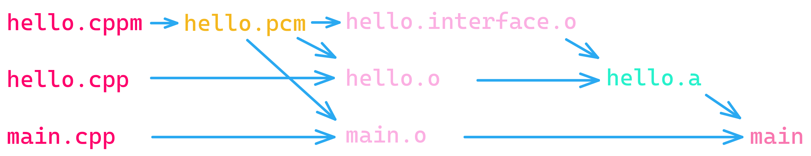

C++ modules
Apart from clean dependency management, modules can reduce compile times. Try to use them if you can.
You can find full examples at rules_ll/examples.
Note
rules_ll has no builtin support for Clang modules. This feature precedes C++
modules.
You can't use standard library headers via import std.iostream; as you would
when using Clang modules.
Due to a bug in clang-tidy you have to silence
readability-redundant-declaration when using modules.
Warning
As modules stabilize upstream, expect this API to change in the future.
Basic usage
Consider the following module without implementation:
module;
#include <iostream>
export module hello;
export namespace hello {
auto say_hello() -> void {
std::cout << "Hello from hello interface!" << std::endl;
}
} // namespace hello
import hello;
auto main() -> int {
hello::say_hello();
return 0;
}
The rules_ll build file for this could look like this:
load("@rules_ll//ll:defs.bzl", "ll_binary")
ll_binary(
name = "mybinary",
srcs = ["main.cpp"],
interfaces = {"hello.cppm": "hello"},
compile_flags = ["-std=c++20"],
)
The interfaces attribute dict maps module interfaces to module names.
Interface-implementation split
Clang expects interfaces to end in .cppm:
module;
#include <iostream>
module hello;
namespace hello {
auto say_hello_from_implementaion() -> void {
std::cout << "Hello from implementation!" << std::endl;
}
} // namespace hello
module;
#include <iostream>
export module hello;
export namespace hello {
auto say_hello_from_implementation() -> void;
auto say_hello_from_interface() -> void {
std::cout << "Hello from interface!" << std::endl;
}
}
import hello;
auto main() -> int {
hello::say_hello_from_implementation();
hello::say_hello_from_interface();
return 0;
}
To build this module, your build file could look like this:
load("@rules_ll//ll:defs.bzl", "ll_library", "ll_binary")
ll_library(
name = "hello",
srcs = ["hello.cpp"],
exposed_interfaces = {"hello.cppm": "hello"},
compile_flags = ["-std=c++20"],
)
ll_binary(
name = "main",
srcs = ["main.cpp"],
deps = [":hello"],
)
Use exposed_interfaces in ll_library. This way the main target can see the
interface for the hello module.
Under the hood
For the preceding example, rules_ll builds main as follows:

For the ll_library target:
- The compiler precompiles
hello.cppmtohello.pcm. - The compiler compiles
hello.pcmtohello.interface.o. The.interfacepart avoids name clashes with outputs from files likehello.cpp. - The compiler compiles
hello.cpptohello.ousinghello.pcm. - By default
ll_libraryarchiveshello.interface.oandhello.otohello.a. Thenameattribute determines the filename. The archive name doesn't depend on the module name. You can change this behavior with theemitattribute.
For the ll_binary target:
- The compiler compiles
main.cpptomain.ousinghello.pcm. This step doesn't depend onhello.o. - The linker links
hello.aandmain.oto the final executablemain.
Pitfalls
The exposed attribute applies to all interfaces in ll_library, including
those in the interfaces attribute. rules_ll builds interfaces first and
then makes them visible to exposed_interfaces. This way you can declare more
complex modules in a single target.
If you have a dependency chain a -> b -> c and you import c in a target, you
need to add deps = [":a", ":b", ":c"] to that target. The build still requires
the interfaces for a and b, even though you didn't explicitly specify those
in your code.
Suggestions
Read the C++ standard on modules.
Read about Standard C++ Modules in Clang.
Name your modules according to this proposal.
Use lower-case ASCII characters with <organization>.<project>.<module_name> as
naming scheme.
Use namespaces that mimic your module names. This way you can use a symbol f
in module eomii.someproject as eomii::someproject::f.
Use module partitions to keep namespace hierarchies flat.
Use a file layout that reflects your module hierarchies.
Current state of usability
The module support in rules_ll conforms to the standard, but doesn't include
support for header units. Use #include <iostream> in global module fragments
instead of import <iostream>;.
Clang has unstable, experimental module support. To fix current compiler bugs,
rules_ll applies custom patches to libcxx.
rules_ll adjusts compilation databases emitted by ll_compilation_database.
This makes modules work with clang-tidy.